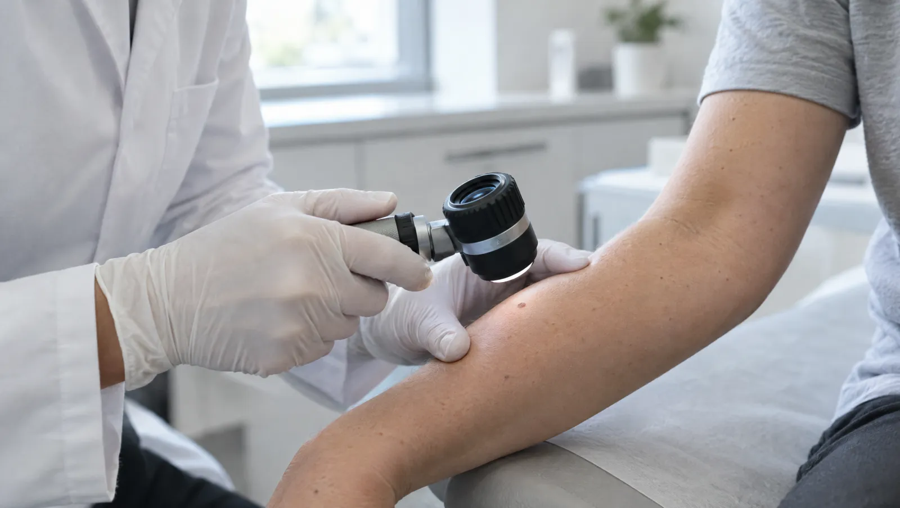

Deri hastalıkları uzmanının çalışma alanı
Dermatoloji cilt, saç, tırnak ve ağız içi mukozanın hastalıklarına bakar. Kaşıntı, döküntü, sivilce, kepeklenme, saç dökülmesi ve şekli değişen benler sık başvuru nedenleridir. Uzman, cildinizi iyi ışık altında ve gerekirse büyüteçle inceler. Bazı durumlarda küçük bir doku örneği ya da kazıntı alır. Tedaviyi bu bulgulara göre planlar.
Sedef, egzama ve kurdeşen gibi hastalıklar çoğu zaman alevlenip sakinleşerek seyreder. Bu yüzden amaç, şikâyetleri kontrol altında tutmak ve alevlenmeleri seyrekleştirmektir. Tetikleyicileri bulmak burada önemli rol oynar. Örneğin sık el yıkamak, yünlü giysi, stres ya da bazı kozmetikler tabloyu ağırlaştırabilir. Düzenli nemlendirme alışkanlığı da tedavinin parçasıdır.
Polikliniğin odağı, cilt hastalıklarının tanısı ve tedavisidir. Ben muayenesi de bu kapsamın önemli bir parçasıdır. Güneşte kolay yanan, açık tenli ya da çok sayıda beni olan kişilerin düzenli kontrol yaptırması önerilir. Kendi cildinizi ayda bir aynada incelemek de değişiklikleri erken fark etmenizi sağlar.

Cildinizde dikkat etmeniz gereken değişiklikler
- Şekli, rengi ya da boyutu değişen, kanayan veya kaşınan ben
- Birkaç haftadır iyileşmeyen yara ya da kabuklanan nokta
- Gece uykudan uyandıran kaşıntı
- Birden artan ya da belirli bir bölgede yoğunlaşan saç dökülmesi
- Tırnakta renk değişikliği, kalınlaşma veya yatağından ayrılma
- Reçetesiz ürünlerle geçmeyen, iz bırakan sivilceler
- Tekrarlayan kızarıklık, pullanma ya da kabarık plaklar
- Yeni bir ilaç ya da kozmetik ürün sonrası çıkan döküntü
Acil durumda beklemeyin
Dudakta, dilde ya da göz çevresinde hızla gelişen şişlik ağır bir alerjik tepki olabilir. Nefes darlığı ya da baş dönmesiyle gelen yaygın kurdeşen de aynı önemi taşır. Böyle bir durumda 112'yi arayın. Yüksek ateşle yayılan, su toplayan ya da derinin soyulduğu döküntülerde de vakit kaybetmeden acil servise başvurun.
Sık karşılaşılan cilt, saç ve tırnak sorunları
- Akne (sivilce)
- Atopik dermatit (egzama)
- Sedef hastalığı
- Kurdeşen (ürtiker)
- Deri ve tırnak mantarı
- Siğil
- Saç dökülmesi ve saçkıran
- Seboreik dermatit (kepek, yağlı pullanma)
- Rozasea (gül hastalığı)
- Uyuz ve bit
- Temasla gelişen egzama (kontakt dermatit)
- Ben takibi
Cildi yakından inceleme yolları
Dermatoskopi
Işıklı bir büyüteçle benlerin ve lekelerin iç yapısı incelenir. Zamanla değişen benleri izlemede kullanılır.
- Süre
- Birkaç dakika
- Hazırlık
- İncelenecek bölgeye makyaj ya da krem sürmeyin
Mantar incelemesi
Deri, tırnak ya da saçtan alınan kazıntı mikroskopta incelenir. Mantar şüphesinde tedavi planından önce istenir.
- Süre
- Örnek alma birkaç dakika
- Hazırlık
- Tırnaktaki ojeyi önceden silin
Deri biyopsisi
Bölge uyuşturulduktan sonra küçük bir deri parçası alınır ve incelemeye gönderilir. Görünümden anlaşılamayan durumlarda tanıyı netleştirir.
- Süre
- 15-20 dakika
- Hazırlık
- Kan sulandırıcı kullanıyorsanız önceden söyleyin
Kriyoterapi
Siğil gibi yüzeysel oluşumlar sıvı azotla dondurulur. Birkaç hafta arayla tekrar gerekebilir.
- Süre
- Birkaç dakika
- Hazırlık
- Hazırlık gerekmez
Yama testi
Temasla gelişen alerjide şüpheli maddeler küçük bantlarla sırta yapıştırılır. Cildin tepkisi günler içinde okunur.
- Süre
- Bantlar 48 saat kalır, sonra 2-3 kez kontrol edilir
- Hazırlık
- Sırtınıza krem sürmeyin, test öncesi güneşlenmeyin
Muayene günü cildiniz için birkaç not
- Muayene edilecek bölgede makyaj, oje ya da krem olmasın
- Kullandığınız krem, şampuan ve ilaçların kutularını getirin ya da fotoğrafını çekin
- Döküntü gelip geçiyorsa yoğun olduğu günlerde çektiğiniz fotoğrafları gösterin
- Ben kontrolü için kolay çıkarılan giysiler giyin
- Kaşıntının hangi saatlerde arttığını ve neyle tetiklendiğini not edin
Dermatoloji hekimleri

Cildinizle ilgili akla takılanlar
Benlerimi ne sıklıkla kontrol ettirmeliyim?
Bu sıklık kişiden kişiye değişir. Çok sayıda beni, ailesinde cilt kanseri öyküsü olan ya da güneşte kolay yanan kişiler için yılda bir kontrol yaygın bir öneridir. Diğer herkes için ayda bir yapılan ayna kontrolü iyi bir başlangıçtır. Asimetrik, kenarı düzensiz, birden çok renk içeren ya da büyüyen bir ben görürseniz yıllık kontrolü beklemeden randevu alın.
Sivilceleri sıkmak iz bırakır mı?
Bırakabilir. Sıkmak, iltihabı derinin daha alt katmanlarına iter. Bu da kalıcı çukur izlere ve koyu lekelere zemin hazırlar. Akneyi erken dönemde tedavi ettirmek iz riskini azaltır.
Egzama bulaşıcı mıdır?
Bulaşıcı değildir. Egzama, cilt bariyerinin zayıflığı ve bağışıklık sisteminin aşırı tepkisiyle ilişkilidir. Kaşıyınca açılan yaralar ise mikrop kapabilir; o zaman kızarıklık, sarı kabuk ve akıntı görülür. Böyle bir değişiklik fark ederseniz kontrol randevunuzu öne alın.
Saç dökülmesi için hangi tahliller isteniyor?
Günde belli sayıda saç dökülmesi olağandır. Dökülme artmışsa hekim önce saçlı deriyi ve saç tellerini inceler. Ardından demir depoları, tiroid hormonları ve bazı vitaminler için kan tahlili isteyebilir. Doğum, ağır bir hastalık, hızlı kilo kaybı ya da yoğun stresten 2-3 ay sonra başlayan dökülmeler de sık görülür. Bu yüzden son aylarda yaşadıklarınızı anlatmanız önemlidir.
Bu sayfayı Uzm. Dr. Ebru Kalkan gözden geçirdi. Son güncelleme: 7 Ekim 2026.